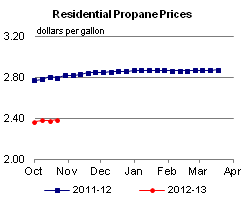

Released: October 24, 2012
Next Release: November 2, 2012
NOTICE: Due to storm related delays This Week in Petroleum will not be released on Thursday as scheduled. We apologize for the delay and will be publishing as soon as possible.
U.S. Propane Production Growth Pushes Inventories and Exports Higher
As a fuel that is a product of both natural gas processing and crude oil refining, propane supply has benefitted from the growing volumes of U.S. tight oil and shale gas production. Oil and gas production increases have made U.S. propane markets well-supplied; propane production in June reached 1.28 million barrels per day (bbl/d), the highest monthly total since the U.S. Energy Information Administration's (EIA) data series began in 1981. These production increases have caused inventories of propane to reach near-record levels. Given the ample domestic propane market supplies, prices for propane have declined in 2012, and as a result, have encouraged rising exports of propane from the United States.
With propane production at refineries experiencing little change in recent years, most of the propane production growth since 2010 has come from natural gas processing plants (Figure 1). Propane, along with other natural gas liquids (NGL), is a byproduct of natural gas production at fields containing wet gas-or, a high volume of NGL-such as the Eagle Ford play in South Texas, where operators target a combination of crude oil, condensate and NGL. The growing propane supplies are thus partly driven by producers responding to lower natural gas prices by increasingly focusing their production on wet gas fields, which are more profitable right now than dry gas production.
{kind=link}
In 2009, January-July total production of propane and propylene, which is similar to propane in chemical structure and use, averaged just under 1.07 million bbl/d, with about 540,000 bbl/d coming from natural gas processing plants and 530,000 bbl/d coming from refineries. Through the first seven months of 2012, total propane and propylene production averaged 1.24 million bbl/d, a 16-percent increase over the same period in 2009. Of the 170,000-bbl/d growth, about150,000 bbl/d was the result of increased production from natural gas processing plants, while 20,000 bbl/d was the result of increased refinery production.
Despite the increase in production, U.S. consumption of propane has not been growing. Through the first seven months of 2012, EIA data show combined propane and propylene consumption averaged 1.15 million bbl/d, a decrease of 25,000 bbl/d (2 percent) from the average for the first seven months of the years 2007-11. While some of this decrease is weather related, consumption has not risen above the record annual average of 1.28 million bbl/d in 2004. The principal reason for this has been the reduced petrochemical use of propane and propylene.
Growing production, combined with flat domestic consumption, raised inventory levels and reduced prices. Inventories of propane and propylene in the United States reached 75.9 million barrels on October 5, the highest level since October 1998. Even after a small draw for the week ending October 12, total U.S. propane and propylene inventories stood at 74.6 million barrels, 11.5 million barrels (18 percent) higher than the five-year average for the comparable week. At the same time, propane prices have been low compared to their typical relationship to crude oil. In September, the spot price for propane at Mont Belvieu, Texas, averaged 91 cents per gallon, the lowest September average price since 2004. On an energy-content basis, propane sold for an average of $9.96 per million British thermal units (MMBtu) in September, while Brent crude oil sold at an average of $19.46 per MMBtu (Figure 2). The $9.50 differential between the two was the second largest since EIA's data series for propane prices began in 1992, the largest just one month earlier in August when it reached almost $10 per MMBtu. Prior to 2010, propane prices closely tracked Brent crude oil prices on an energy content basis. However, as production from natural gas processing plants has driven growth in propane supplies in recent years, propane prices have increasingly decoupled from crude oil prices and moved into a range between crude and natural gas prices.
{kind=link}
With domestic propane prices low, U.S. exports have become more competitive in global markets. Exports account for a growing share of U.S. propane and propylene production. In 2012, from January-July, the United States exported an average of 160,000 bbl/d, while importing an average of 130,000 bb/d. In April 2012, gross exports reached almost 190,000 bbl/d, a record since the EIA data series began in 1973. Almost all U.S. propane and propylene exports (about 90 percent in July 2012) come from the Gulf Coast (PADD 3). Mexico is the largest buyer of U.S. propane, with other Latin American countries such as Chile, Honduras, the Dominican Republic, and Brazil also importing substantial volumes. Most U.S. imports come from Canada and go to the Midwest (PADD 2).
Gasoline and diesel fuel prices fall
The U.S. average retail price of regular gasoline decreased 13 cents last week to $3.69 per gallon, 23 cents per gallon higher than last year at this time. Prices decreased in all regions of the Nation, with the largest decrease in the Midwest, where the average price is down 20 cents to $3.49 per gallon. This is the largest one-week decrease in the Midwest price since November 3, 2008. The Gulf Coast price fell a dime to $3.45 per gallon and the East Coast price is now $3.70 per gallon, nine cents less than last week. The average price in the Rocky Mountains is now $3.71 per gallon, down three cents from last week, and the West Coast price fell 15 cents to $4.25 per gallon.
The national average diesel fuel price decreased three cents to $4.12 per gallon, 29 cents per gallon higher than last year at this time. The diesel price fell in all regions of the Nation, with both the Midwest and West Coast prices dropping a nickel, to $4.10 per gallon and $4.30 per gallon, respectively. The Rocky Mountain price is $4.24 per gallon, three cents less than last week. The average price decreased two cents on both the East and Gulf Coasts, to $4.11 per gallon and $4.00 per gallon, respectively.
Propane inventories fall slightly
Last week, total U.S. inventories of propane declined by 0.2 million barrels to end at 74.5 million barrels, 26 per cent higher than the same week last year. Midwest regional inventories were the only regional stocks to decline, falling 0.4 million barrels. Elsewhere, Gulf Coast stocks rose 0.3 million barrels, while the East Coast and Rocky Mountain/West Coast stocks rose slightly. Propylene non-fuel-use inventories represented 5.7 percent of total propane inventories.
Residential heating oil prices decrease while residential propane prices see minor increase
Residential heating oil prices decreased during the period ending October 22, 2012. The average residential heating oil price fell by a penny per gallon last week to just below $4.03 per gallon, 23 cents per gallon higher than the same time last year. Wholesale heating oil prices decreased by 10 cents per gallon last week to reach a price shy of $3.25 per gallon, 13 cents per gallon more than last year at this time.
The average residential propane price increased last week, by a penny per gallon, to reach a price near $2.39 per gallon. This is a drop of nearly 41 cents per gallon compared to the same period last year. Wholesale propane prices increased by less than a penny per gallon to just under $1.00 per gallon for the week ending October 22, 2012. This was a decrease of nearly 50 cents per gallon when compared to the October 24, 2011 price.
Text from the previous editions of This Week In Petroleum is accessible through a link at the top right-hand corner of this page.
|  | |||||||
| Retail Data | Change From Last | Retail Data | Change From Last | ||||
| 10/22/12 | Week | Year | 10/22/12 | Week | Year | ||
| Gasoline | 3.687 | Heating Oil | 4.027 | ||||
| Diesel Fuel | 4.116 | Propane | 2.385 | ||||
|
|||||||||||||||||||||||||||
| *Note: Crude Oil Price in Dollars per Barrel. | |||||||||||||||||||||||||||
| Stocks Data | Change From Last | Stocks Data | Change From Last | ||||
| 10/19/12 | Week | Year | 10/19/12 | Week | Year | ||
| Crude Oil | 375.1 | Distillate | 118.0 | ||||
| Gasoline | 198.6 | Propane | 74.475 | ||||